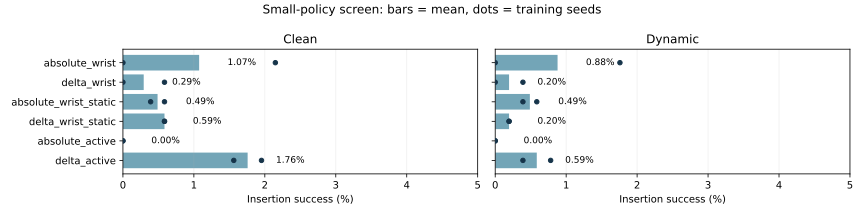
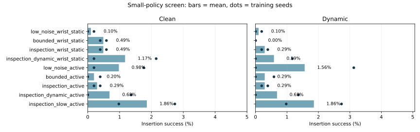
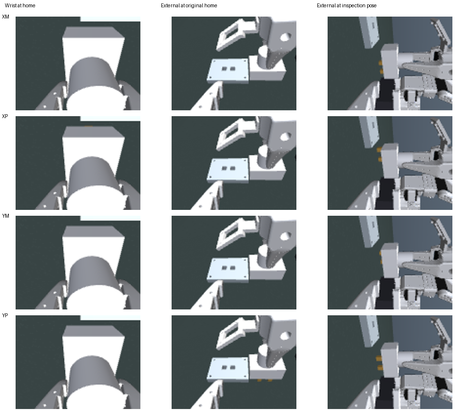

Shared manipulator XYZ and camera XYZ/pan/tilt target increments at 25 Hz. Fixed and active conditions start with the same arm-mounted camera. Original four plug variants, 2 mm / three-sample physical success, 3.5-second horizon and unchanged insertion reward.
Control screen: absolute and delta commands share a 5 mm per-step slew limit. Camera follow-ups separately test bounded exploration, slower camera decisions and dynamic-occlusion training. Each recipe uses two training seeds; this is a small-budget screen.
All camera-stage recipes use the expanded inspection workspace, initial action noise 0.3 and entropy coefficient 0.003. Compare recipes within that stage to isolate the distribution, starting pose, training occlusion or camera interval; a direct comparison against the control stage also changes exploration settings and camera bounds.
All 30 fresh policies completed 1,228,800 transitions each. Delta alone gave a small gain for active policies (0% to 1.76% clean success), but no general boost across sensing conditions. These small from-scratch runs are not comparable to the longer-trained original benchmark or the specialized YM-only repair.
The camera follow-ups remain at low absolute success. The slower-camera recipe reaches 1.86% on dynamic tests versus 0.59% for its fixed-camera match; holding the external image from reset reaches 2.15%. The raw active-policy gain therefore does not establish a benefit from updated external views in this screen.
The sampled physical controller can solve the task and better views are reachable, but the learned policies remain poor at the four-variant manipulation task. Establishing reliable visual estimation and manipulation competence is the next priority before a stronger claim about active sensing. The initial clear interval and fixed target also reduce the need for later camera motion.


Mean success ± sample SD between training seeds. Two seeds and a short training budget do not establish convergence or statistical significance.
| Stage | Recipe | Clean | Dynamic |
|---|---|---|---|
| camera_v1 | low_noise_wrist_static | 0.10% ± 0.14 (2/2 seeds) | 0.10% ± 0.14 (2/2 seeds) |
| camera_v1 | bounded_wrist_static | 0.49% ± 0.14 (2/2 seeds) | 0.00% ± 0.00 (2/2 seeds) |
| camera_v1 | inspection_wrist_static | 0.49% ± 0.14 (2/2 seeds) | 0.29% ± 0.14 (2/2 seeds) |
| camera_v1 | inspection_dynamic_wrist_static | 1.17% ± 1.38 (2/2 seeds) | 0.59% ± 0.83 (2/2 seeds) |
| camera_v1 | low_noise_active | 0.98% ± 1.10 (2/2 seeds) | 1.56% ± 2.21 (2/2 seeds) |
| camera_v1 | bounded_active | 0.20% ± 0.28 (2/2 seeds) | 0.29% ± 0.41 (2/2 seeds) |
| camera_v1 | inspection_active | 0.29% ± 0.14 (2/2 seeds) | 0.29% ± 0.14 (2/2 seeds) |
| camera_v1 | inspection_dynamic_active | 0.68% ± 0.97 (2/2 seeds) | 0.68% ± 0.97 (2/2 seeds) |
| camera_v1 | inspection_slow_active | 1.86% ± 1.24 (2/2 seeds) | 1.86% ± 1.24 (2/2 seeds) |
| control_v2 | absolute_wrist | 1.07% ± 1.52 (2/2 seeds) | 0.88% ± 1.24 (2/2 seeds) |
| control_v2 | delta_wrist | 0.29% ± 0.41 (2/2 seeds) | 0.20% ± 0.28 (2/2 seeds) |
| control_v2 | absolute_wrist_static | 0.49% ± 0.14 (2/2 seeds) | 0.49% ± 0.14 (2/2 seeds) |
| control_v2 | delta_wrist_static | 0.59% ± 0.00 (2/2 seeds) | 0.20% ± 0.00 (2/2 seeds) |
| control_v2 | absolute_active | 0.00% ± 0.00 (2/2 seeds) | 0.00% ± 0.00 (2/2 seeds) |
| control_v2 | delta_active | 1.76% ± 0.28 (2/2 seeds) | 0.59% ± 0.28 (2/2 seeds) |
Machine-readable summary · CSV · Original report
| Stage | Policy | Transitions | Status | Clean test | Dynamic test |
|---|---|---|---|---|---|
| camera_v1 | low_noise_wrist_static_s0 | 1,228,800 | Complete | 0/512 (0.0%) | 0/512 (0.0%) |
| camera_v1 | bounded_wrist_static_s0 | 1,228,800 | Complete | 3/512 (0.6%) | 0/512 (0.0%) |
| camera_v1 | inspection_wrist_static_s0 | 1,228,800 | Complete | 2/512 (0.4%) | 2/512 (0.4%) |
| camera_v1 | inspection_dynamic_wrist_static_s0 | 1,228,800 | Complete | 1/512 (0.2%) | 0/512 (0.0%) |
| camera_v1 | low_noise_active_s0 | 1,228,800 | Complete | 9/512 (1.8%) | 16/512 (3.1%) |
| camera_v1 | bounded_active_s0 | 1,228,800 | Complete | 2/512 (0.4%) | 3/512 (0.6%) |
| camera_v1 | inspection_active_s0 | 1,228,800 | Complete | 2/512 (0.4%) | 2/512 (0.4%) |
| camera_v1 | inspection_dynamic_active_s0 | 1,228,800 | Complete | 7/512 (1.4%) | 7/512 (1.4%) |
| camera_v1 | inspection_slow_active_s0 | 1,228,800 | Complete | 14/512 (2.7%) | 14/512 (2.7%) |
| camera_v1 | low_noise_wrist_static_s1 | 1,228,800 | Complete | 1/512 (0.2%) | 1/512 (0.2%) |
| camera_v1 | bounded_wrist_static_s1 | 1,228,800 | Complete | 2/512 (0.4%) | 0/512 (0.0%) |
| camera_v1 | inspection_wrist_static_s1 | 1,228,800 | Complete | 3/512 (0.6%) | 1/512 (0.2%) |
| camera_v1 | inspection_dynamic_wrist_static_s1 | 1,228,800 | Complete | 11/512 (2.1%) | 6/512 (1.2%) |
| camera_v1 | low_noise_active_s1 | 1,228,800 | Complete | 1/512 (0.2%) | 0/512 (0.0%) |
| camera_v1 | bounded_active_s1 | 1,228,800 | Complete | 0/512 (0.0%) | 0/512 (0.0%) |
| camera_v1 | inspection_active_s1 | 1,228,800 | Complete | 1/512 (0.2%) | 1/512 (0.2%) |
| camera_v1 | inspection_dynamic_active_s1 | 1,228,800 | Complete | 0/512 (0.0%) | 0/512 (0.0%) |
| camera_v1 | inspection_slow_active_s1 | 1,228,800 | Complete | 5/512 (1.0%) | 5/512 (1.0%) |
| control_v2 | absolute_wrist_s0 | 1,228,800 | Complete | 0/512 (0.0%) | 0/512 (0.0%) |
| control_v2 | delta_wrist_s0 | 1,228,800 | Complete | 0/512 (0.0%) | 0/512 (0.0%) |
| control_v2 | absolute_wrist_static_s0 | 1,228,800 | Complete | 2/512 (0.4%) | 2/512 (0.4%) |
| control_v2 | delta_wrist_static_s0 | 1,228,800 | Complete | 3/512 (0.6%) | 1/512 (0.2%) |
| control_v2 | absolute_active_s0 | 1,228,800 | Complete | 0/512 (0.0%) | 0/512 (0.0%) |
| control_v2 | delta_active_s0 | 1,228,800 | Complete | 10/512 (2.0%) | 2/512 (0.4%) |
| control_v2 | absolute_wrist_s1 | 1,228,800 | Complete | 11/512 (2.1%) | 9/512 (1.8%) |
| control_v2 | delta_wrist_s1 | 1,228,800 | Complete | 3/512 (0.6%) | 2/512 (0.4%) |
| control_v2 | absolute_wrist_static_s1 | 1,228,800 | Complete | 3/512 (0.6%) | 3/512 (0.6%) |
| control_v2 | delta_wrist_static_s1 | 1,228,800 | Complete | 3/512 (0.6%) | 1/512 (0.2%) |
| control_v2 | absolute_active_s1 | 1,228,800 | Complete | 0/512 (0.0%) | 0/512 (0.0%) |
| control_v2 | delta_active_s1 | 1,228,800 | Complete | 8/512 (1.6%) | 4/512 (0.8%) |
Inspection recipes start both fixed and active cameras at a calibrated reachable pose. In the independent geometric audit, plug landmark visibility rises from 8/32 at the original home to 31/32 at this pose. Per-reset view selection also reaches 31/32: this supports better placement, not an adaptive-camera advantage.
The privileged scripted controller completes 32/32 native-MuJoCo insertions with each matched control mapping. This establishes sampled physical feasibility, not learned policy competence. Physical feasibility audit

With the manipulation scene held at reset and the existing blocker probed at five sweep phases, the best tested fixed view exposes the landmarks in 80/160 sampled scenes; an oracle choosing among the tested valid views reaches 92/160. This suggests some adaptive information opportunity during occlusion. It does not include camera travel time or demonstrate insertion success. Sweep-phase visibility audit
The existing plug sweep starts 0.35–1.47 seconds into the episode and clears by 2.59 seconds at the latest. The fixture stays fixed. Thus an initially clear view, recurrent memory and later clearance can substitute for camera motion; active sensing is useful only when it resolves remaining uncertainty in time. This is a task-structure inference, not a claim that movement can never help. Timing and information audit
Matched dynamic tests freeze the external RGB stream at reset or after the inspection second. Physically freezing the camera also changes motion and proprioception; it is not a pure visual intervention.
| Policy | Normal | Hold image at reset | Hold image after 1 s | Hold camera after 1 s |
|---|---|---|---|---|
| low_noise_active_s0 | 3.12% | 2.54% | 2.93% | 5.86% |
| bounded_active_s0 | 0.59% | 0.00% | 0.20% | 0.39% |
| inspection_active_s0 | 0.39% | 0.39% | 0.20% | 0.20% |
| inspection_dynamic_active_s0 | 1.37% | 1.76% | 1.17% | 1.76% |
| inspection_slow_active_s0 | 2.73% | 3.12% | 2.93% | 0.98% |
| low_noise_active_s1 | 0.00% | 0.00% | 0.00% | 0.00% |
| bounded_active_s1 | 0.00% | 0.00% | 0.00% | 0.00% |
| inspection_active_s1 | 0.20% | 0.00% | 0.20% | 0.20% |
| inspection_dynamic_active_s1 | 0.00% | 0.00% | 0.00% | 0.00% |
| inspection_slow_active_s1 | 0.98% | 1.17% | 1.17% | 1.37% |
All available paired absolute/delta and fixed/active comparisons have identical initial physical-state hashes. Raw successes are checked against episode flags and the physical three-sample hold criterion. Shared action-space contract
Updated 2026-10-12T21:54:35.234855+00:00